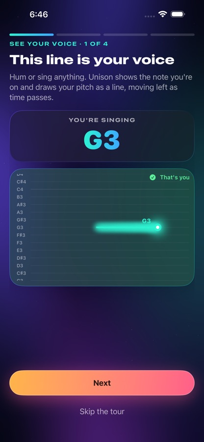
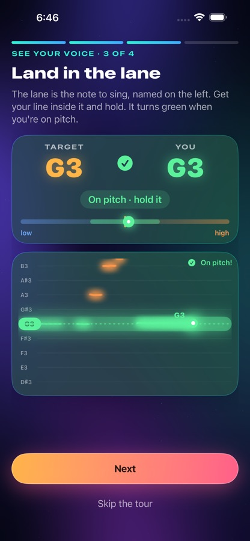
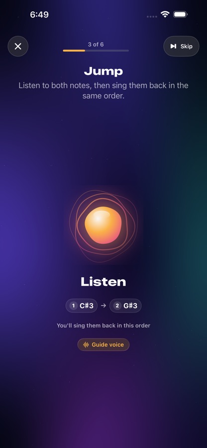
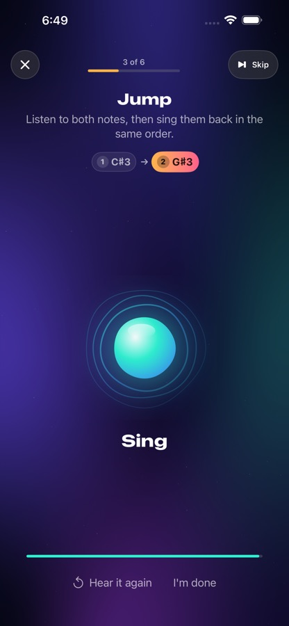
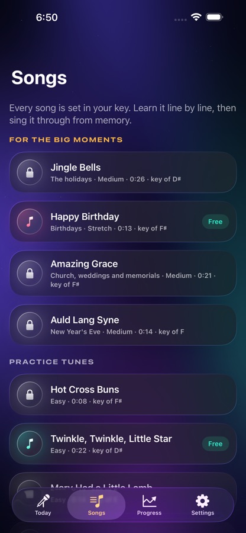

Think you can't sing? You probably can. Most people who sing off-key hear pitch just fine; their voice hasn't learned where to go. Unison trains exactly that, in your own voice.
Download on the App Store See how it worksFree voice check · iPhone · No account, no ads

Five minutes a day, aimed at what your voice actually needs.
Five minutes measures your range, how finely you hear pitch and how you match notes, jumps and tunes. You get a plain-English profile and a plan.
Record one "ah" and Unison sings exercises back to you in your own voice, in tune. People match their own voice best.
A weekly solo check with no help at all shows what you can really do on your own. No flattering numbers.
Happy Birthday, carols, hymns, lullabies, Here Comes the Bride and more, set to your range. Learn line by line, then sing from memory.
High notes falling flat? Big jumps coming up short? Unison spots the pattern and tells you how to fix it, with the exercise that trains it.
Breath, steady notes, smooth slides and soft-to-loud control: the skills that make every note easier.
Rounds and harmony parts with the app, from holding the home note to a full harmony line. The step toward singing with others.
Levels, badges and a weekly challenge song. Send a friend your score and see who wins, or compete on Game Center.
Your singing is analyzed on your iPhone and never uploaded. Recordings leave your phone only if you share them.




Start free. Upgrade when you want a full plan.
or $12.99 / month · 2 weeks free with yearly
Prices in US dollars; your App Store shows local prices. Subscriptions renew automatically; cancel any time in your Apple Account settings.
Questions, problems or feedback: tomdif@gmail.com.
The app can't hear me. Turn on microphone access in iOS Settings › Unison › Microphone. In the app, Settings › Microphone check shows what the microphone is hearing. A quiet room helps; headphones help more.
How do I cancel my subscription? In the app: Settings › Manage or cancel subscription. Or in iOS Settings › your name › Subscriptions. Deleting the app does not cancel it.
I got a new phone. Sign in with the same Apple Account and open Unison: it offers to restore your progress from iCloud. For Premium, use Settings › Restore purchases.
How do I delete my data? Settings › Delete all my data. Unison stores everything on your phone and, if backup is on, in your own private iCloud; there are no accounts or servers of ours. Deleting removes both.
Is my singing uploaded? No. It is analyzed on your phone. See the privacy policy.
Singing together needs headphones. Through the speaker, the microphone would hear the app's part as yours.
My voice feels tired. Stop and rest. Unison is a practice tool, not medical advice; for ongoing voice problems, see a doctor or speech therapist.